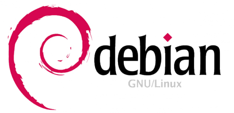

Linux Install Party

¿Por qué GNU/Linux?
Gratis
No tienes que pagar 100 euros por un Sistema Operativo
Libre
- Kernel abierto bajo licencia GPL
- No te gusta algo? Aprende a programar C y cámbialo! (Más o menos)


No te espía
Control total
-
Es un doble filo

- Con un poco de suerte aprenderás un poquito cada vez.
¿Qué distribución coger?

Debian
- Comunidad enorme
- Sistema muy estable
Ubuntu
- Basado en Debian
- Probablemente la más agradable para novatos.
- Paquetes preconfigurados, buena interfaz gráfica
Arch Linux
- Simple
- Moderno
- Versátil
Otras
- Fedora
- Linux Mint
- OpenSUSE
- ...
¿Máquina virtual o no?
Una máquina virtual es una emulación de un sistema real... Para lo que nos concierne es un S.O. sobre otro.
Pros
- Sandbox No se comerá tu colada (ni puede borrar todo tu disco duro)
- Flexibilidad
- Facilidad de instalación
Contras
- Más lento (a veces mucho)
- Peor soporte de determinado hardware (no suele ser muy problemático)